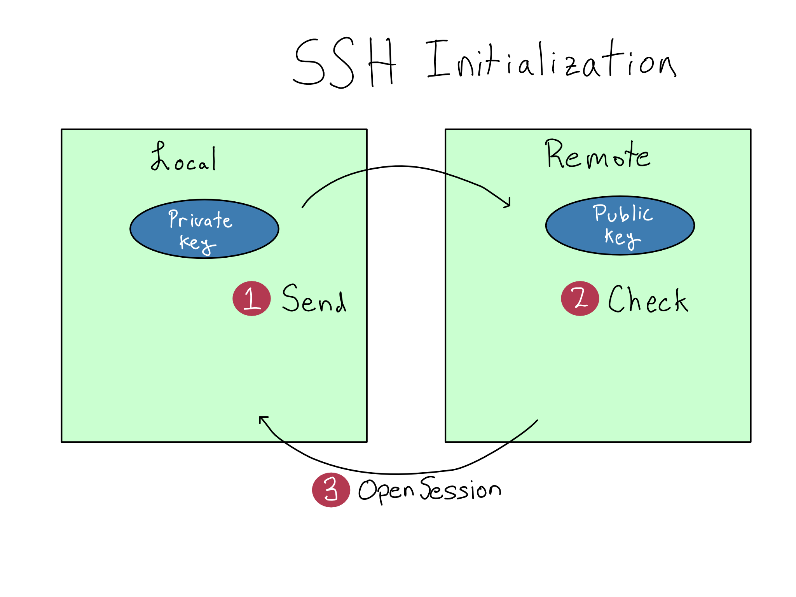

8 Using the command line
Interacting with your personal computer or phone happens via taps and clicks, opening applications, and navigating tabs and windows. But server operating systems have no graphical user interface (GUI) to be tapped or clicked. On a server, administrative interaction is via the command line – an all-text interface where you type to indicate what you want to do.
Even if you’re not administering a server, it’s worth learning your way around the command line as many tasks are quicker and easier from there. Most people who learn the command line often use it on their personal computers.
In some organizations, server admin tasks are done via a graphical tool, but this is a red flag.
It means that the organization is either trying to find relatively low-paid (and probably low-skilled) admins or are using a graphical tool to limit what IT/Admins can do. Either way, it’s going to be harder to get things done.
In this chapter, you will learn to set up and customize your machine’s command line and to access a server via secure socket shell (SSH) – the administrative side door on a server.
8.1 Getting the command line you want
As you start on the command line, you’ll soon realize that some customization is in order. Maybe the colors aren’t quite right, or you want shortcuts for commands you often type, or you want more information in the display.
Some might argue that customizing your command line isn’t the best use of your time and energy. Those people are no fun. A command line that behaves exactly as you like will speed up your work and make you feel like a hacker.
But as you get started, you’ll soon find yourself neck-deep in Stack Overflow posts on how to customize your .bashrc. Or wait, is it the .zshrc? Or…
The command line you interact with is two or three programs that sit on top of each other. You can mix and match options and configure each in various ways, which makes customization a little confusing.
Because I’ve been using the command line in MacOS for many years, I have strong opinions to share in this chapter.
I haven’t used a Windows machine in a while. I’ve collected some recommendations, but I can’t personally vouch for them the same way.
I don’t include Linux recommendations because people who use Linux on their desktops have already gone deep down the customization rabbit hole and don’t need my help wasting their time.
8.2 The terminal
The terminal is the GUI where you’ll type in commands. Your terminal program will dictate the colors and themes available for the window, how tabs and panes work, and the keyboard shortcuts you’ll use to manage them.
Some integrated development environments (IDEs), like RStudio or VS Code, have terminals built into them. You may not need another if you do all your terminal work from one of these environments. These recommendations are in case you do want one.
I’d recommend against using the built-in terminal app (called Terminal). It’s okay, but there are better options.
My favorite is the free iTerm2, which adds a bunch of niceties like better theming and multiple tabs.
The built-in terminal is the favorite of many users. There are a variety of alternatives you can try, but feel free to stick with the default.
8.3 The shell
The shell takes the commands you type and runs them. It’s what matches the commands you type to actual programs on your system. Your options for plugins and themes will depend on which shell you choose.
The shell runs anywhere you’ve got a running operating system, so your computer has one shell, and your server would have a different one. Even a Docker Container has a shell available. That means that if you do a lot of work on a server, you may need to configure your shell twice – locally and on the server.
The default shell for MacOS (and Linux) is called bash. I’d advise you to switch it out for zsh, the most popular bash alternative.1 Bash alternatives are programs that extend bash with various bells and whistles.
Relative to bash, zsh has a few advantages out of the box, like better auto-completion. It also has a huge ecosystem of themes to enhance visual appeal and functionality, and plugins that let your command line do everything from displaying your git status to controlling your Spotify playlist.
I’d recommend looking up instructions for how to install zsh using Homebrew.
Windows comes with two shells built in, the Command Shell (cmd) and the PowerShell.
The Command Shell is older and has been superseded by PowerShell. If you’re getting started, you should work with PowerShell. If you’ve been using Command Shell on a Windows machine for a long time, most Command Shell commands work in PowerShell, so it may be worth switching over.
Many Windows users are switching away from Windows shells entirely in favor of using Windows Subsystem for Linux (WSL), which allows you to run a Linux command line (i.e. bash/zsh) on your Windows machine with minimal configuration, giving you the best of both worlds.
8.4 Configuration management
Now that you’ve installed your shell and terminal, you’ll want to customize them. It is possible to customize both zsh and PowerShell directly. But the best way is to use a configuration manager for your themes and plugins.
Prezto is my favorite configuration and plugin manager for zsh. OhMyZsh is also popular and very good. Feel free to choose either, but you can only use one.
Once you’ve installed Prezto, you’ve got (at least) three places to configure your command line; the iTerm2 preferences, the zsh configuration file .zshrc, and the Prezto configuration file .zpreztorc. I’d recommend leaving .zshrc alone, customizing the look of the window and the tab behavior in the iTerm2 preferences, and customizing the text theme and plugins via Prezto.
I tend to be pretty light on customization, but I’d recommend looking into git plugins and some advanced auto-completion and command history search functionality.
Many people like customizing PowerShell with Oh My Posh.
8.5 Text Editors
As you’re working on the command like, you’ll also be using text editors a fair bit. There are many options for text editors and people have strong preferences.
Mac OS’s default text editor is called TextEdit and it’s bad. Don’t use it. Windows users get Notepad, which is somewhat better than TextEdit, but still not the best option.
You can always edit text files inside your chosen IDE, like VS Code or RStudio. Others may prefer a standalone text editor. The most popular these days are probably Sublime or Notepad++ (Windows only).
Unlike with the terminal, there’s no deep configuration here. Install one from the web, configure it as you like, and make sure it’s the default for opening .txt and other files you might want to edit in your system preferences.
8.6 Secure server connections with SSH
One common IT/Admin task is remotely accessing a server from the command line on your machine. SSH – short for Secure (Socket) Shell – is a tool for making a secure connection to another computer over an unsecured network. It’s most often used to interact with a server’s command line from your computer’s.
SSH requires invoking the ssh command line interface from a local host (your computer) with a username and the remote host’s (server’s) address. For example, connecting to the server at server.example.com as the user alex would look like
Terminal
> ssh alex@server.example.comOnce you run this command, your terminal will open a session to the server’s terminal.
8.6.1 Understanding SSH keys
Before this can work, you’ll have to configure your SSH keys, which come in a set called a keypair. Each keypair consists of a public key and a private key. You’ll register your public key anywhere you’re trying to SSH into, like a server or git host, but your private key must be treated as a precious secret.
When you use the ssh command, your local machine sends a request to open an SSH session to the remote and includes the private key with the request. The remote host verifies the private key with the public key and opens an encrypted connection.

It can be hard to remember how to configure SSH. So let’s detour into public key cryptography, the underlying technology. Once you’ve built a mental model, you can figure out which key goes where without mechanically remembering.
Public key cryptography uses mathematical operations that are simple in one direction but hard to reverse to make it easy to check whether a proffered private key is valid but nearly impossible to fabricate a private key from a public key.
Using the term key for both the public and private keys obscures the differences. I prefer to think of the private key as the key and the public key as the lock. Maybe they should have named them that. But no one asked me.
As a simple example, think of the number \(91\) and its prime factors. Do you know what the prime factors of \(91\) are offhand? I do not. It will probably take a few minutes to figure out the answer, even if you use a calculator. But if I give you the numbers \(7\) and \(13\), it takes just a moment to verify that \(7 * 13 = 91\).
In this example, the number \(91\) would be the public key and the prime numbers \(7\) and \(13\) together would be the private key. This wouldn’t make for very good public key cryptography because it doesn’t take long to figure out that \(7\) and \(13\) are prime factors of \(91\).
In real public key cryptography, the mathematical operations are more complex and the numbers much, much bigger. So much so that it’s basically impossible to break public SSH keys by guessing.
But that doesn’t make SSH foolproof. While it’s impossible to fabricate a private key, it is possible to steal one. Your private key must be kept secret. The best practice is to never move it from the computer where it was created and never to share it.
In summary, do what you want with your public keys, but don’t share your private keys. Don’t share your private keys. Seriously, do not share your private keys.
8.7 Practical SSH usage
Now that you understand of how SSH works, the steps should be easy to remember.
- Create an SSH keypair on any machine you’ll be SSH-ing from (local host).
- Put the public key anywhere you’ll be SSH-ing to (remote host).
- Use the
sshcommand to connect.
If you’re working on a server, you’ll probably create at least two keypairs. One on your personal computer to SSH to the server, and one on the server to access outside services that use SSH, like Git.
8.7.1 Step 1: Create Keypair
You’ll create a keypair on any machine you’re SSH-ing from.
To create an SSH keypair, you should follow a tutorial online. The keypair will have two parts. The one that ends in .pub is – you guessed it – the public key.
You’ll usually create only one private key on each machine. If you follow standard instructions for creating a key, it will use the default name, probably id_ed25519.2 Sticking with the default name is ideal because the ssh command will automatically use it. You’ll have to specify each time you use your key if you don’t use the default name.
Remember, you should never move your private key. If you think the solution to your problem is to move your private key, think again.
Instead of moving your private key, create a new private key on the machine where you must use SSH and register a second public key on the remote.
Some organizations require a unique key for each service you’re using to make it easier to swap keys in case of a breach. If so, you won’t be able to use the default key names.
8.7.2 Step 2: Register the public keys
To register a public key to SSH into a server, you’ll add the public key to the end of the user’s .ssh/authorized_keys file in their home directory. You’ll have to ensure the permissions on the authorized_keys file are correct – more on that in Chapter 9.
If you’re registering with a service like GitHub.com, there’s probably a text box in the GUI to add an SSH key. Google for instructions on how to do it.
8.7.3 Step 3: Use SSH
To use SSH, type ssh <user>@<host>. Other commands can use SSH under the hood, like git or scp.
Windows didn’t support SSH out of the box for a long time, so SSH-ing from Windows required a separate utility called PuTTY. More recent versions of Windows support using SSH directly in PowerShell or Windows Subsystem for Linux (WSL). If SSH isn’t enabled on your machine, Google for instructions.
If you have multiple SSH keys or didn’t use the default flag, you can specify a particular key with the -i flag.
I’d recommend setting up an SSH config file if you use SSH a lot. An SSH config file allows you to create aliases that are shortcuts to SSH commands including users, hosts, and other details. If you had a long SSH command like ssh -i my-ssh-key alex@server.example.com, you could shorten it to ssh alex-server or whatever you want.
One annoyance about SSH is that it blocks the terminal its using and the connection will break when your computer goes to sleep. Many people like using the tmux command line utility to help solve these issues.
tmux is a terminal multiplexer, which allows you to manipulate terminal sessions from the command line, including putting sessions into the background and making sessions durable through sleeps and other operations. I’m mentioning tmux because many people love it, but I’ve found the learning curve too steep for me to use it regularly. Your mileage may vary.
If you ever run into trouble using SSH, it has one of my favorite debugging modes. Just add a -v to your command for verbose mode. If that’s not enough information, add another v for more verbosity with -vv, and if that’s not enough, add another v for super verbose mode.
8.8 Comprehension Questions
- Draw a mental map that includes the following: terminal, shell, theme manager, operating system, my laptop
- Under what circumstances should you move or share your SSH private key?
- What is it about SSH public keys that makes them safe to share?
8.9 Lab: Log in to the server
In the previous chapter, we got your server up and running. In this lab, we’ll use the provided .pem key to log in for the first time.
8.9.1 Step 1: Grab the server address
From the EC2 page, you can click on the instance ID in blue to see all the details about your server.
Copy the Public IPv4 DNS address, which starts with \(\text{ec2-}\) and ends with \(\text{amazonaws.com}\). You’ll need this address throughout the labs. If you lose it, come back here to get it.
In the rest of the labs in this book, I will write the commands using the bash variable SERVER_ADDRESS. If you create that variable, you can copy the commands from the book.
For example, as I write this, my server has the address \(\text{ec2-54-159-134-39.compute-1.amazonaws.com}\). So I would set my server address variable on my command line with SERVER_ADDRESS=ec2-54-159-134-39.compute-1.amazonaws.com.
If you’re used to R or Python, notice that spaces are not permitted around = when assigning variables in bash.
8.9.2 Step 2: Log on with the .pem key
The .pem key you downloaded when you set up the server is the private key for a pre-registered keypair that will let you SSH into your server as the admin user (named ubuntu on a Ubuntu system).
The .pem key is just an SSH key, so that you can SSH to your server with
Terminal
ssh -i do4ds-lab-key.pem \
ubuntu@SERVER_ADDRESSWhen you first try this, you’re probably going to get an alert that looks something like this:
\@\@\@\@\@\@\@\@\@\@\@\@\@\@\@\@\@\@\@\@\@\@
\@ WARNING: UNPROTECTED PRIVATE KEY FILE! \@
\@\@\@\@\@\@\@\@\@\@\@\@\@\@\@\@\@\@\@\@\@\@
Permissions 0644 for 'do4ds-lab-key.pem' are too open.
It is required that your private key files are NOT accessible by others.
This private key will be ignored.
Load key "do4ds-lab-key.pem": bad permissions
ubuntu@ec2-54-159-134-39.compute-1.amazonaws.com: Permission denied (publickey).Because the keypair is so powerful, AWS requires that you restrict the access. You’ll need to change the permissions before using it to access the server. We’ll get into permissions in Chapter 9. Until then, you can adjust the permissions by navigating to the correct directory with the cd command and running chmod 600 do4ds-lab-key.pem.
Once you’ve done that, you can log in to your machine as the root user. You can type exit to exit an SSH session and return to your machine.
8.9.3 Step 3: Create your own SSH key
You shouldn’t use the AWS-provided .pem key to log in to your server after the first time. It’s too powerful. Create a normal SSH key using the instructions earlier in this chapter. In the next lab, we’ll get that SSH key configured for your user on the server.